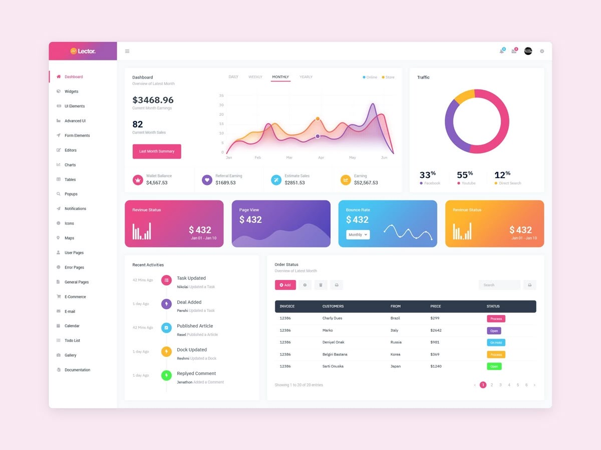

I am a data-driven professional with expertise in data analytics, business intelligence, and visualization.
I specialize in turning raw data into actionable insights using Python, SQL, Excel, and Tableau to help organizations make informed decisions.
With a passion for solving real-world business problems, I combine technical skills and an analytical mindset to deliver impactful, results-oriented solutions.
>
With this project, I analyze the business performance of New-Wheels, a pre-owned vehicle resale company offering end-to-end services from listing to delivery and collecting customer feedback. Sales have been falling over the past year, with negative reviews reducing new customer growth. To help the CEO make informed decisions, I created a quarterly report with key business metrics. Using MySQL, I imported and analyzed data from multiple tables to answer important leadership questions. The final output is a clear, data-driven report showing trends, insights, and recommendations.

A collection of dynamic and visually engaging dashboards built with Tableau, showcasing skills in data visualization, storytelling, and interactive analytics. These projects cover diverse datasets and industries, turning raw data into clear, actionable insights for decision-making.
With this project, I analyzed a house price dataset using Microsoft Excel to clean, organize, and prepare it for deeper analysis. I applied formulas, data validation, sorting, filtering, and conditional formatting to ensure accuracy and highlight key values. The result is a structured dataset ready for pivot tables, charts, and dynamic dashboards to reveal pricing trends and insights.
In this project, I demonstrate how to clean, organize, and transform raw datasets into analysis-ready formats using Python (Pandas). I follow a five-step process—discovery, cleaning, transformation, validation, and publishing—while using a puzzle analogy to make complex concepts more intuitive. The goal is to ensure data accuracy, completeness, and usability, enabling reliable insights and confident decision-making.
In this project, I analyze order data from FoodHub, a food aggregator app that connects customers
to multiple restaurants for online ordering and delivery. The company wanted insights into
restaurant demand to improve customer experience and grow the business. I worked with the stored
order data to answer key business questions from the Data Science team. Using Python for data
exploration, I examined ordering patterns, customer ratings, and restaurant performance.
The result is a set of actionable insights to help FoodHub enhance operations and meet customer
needs more effectively.